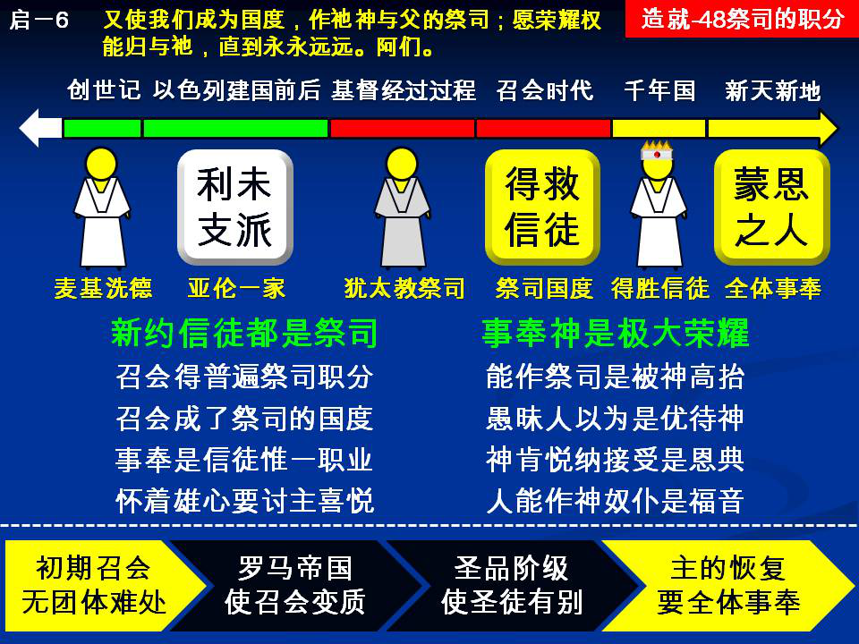

诗歌：612首、658首
重要经文：
启示录一章6节上：又使我们成为国度，作祂神与父的祭司。
出埃及记十九章6节：你们要归我作祭司的国度，为圣别的国民。这些话你要告诉以色列人。
彼得前书二章5节：也就像活石，被建造成为属灵的殿，成为圣别的祭司体系，借着耶稣基督献上神所悦纳的属灵祭物。
纲目要点：
壹 圣经中祭司职分的历史。
贰 在新约时代所有蒙恩的人都是祭司：
一 召会得着了普遍的祭司职分。
二 召会也是祭司的国。
三 基督徒只有一种职业就是事奉神。
四 只有一个雄心是讨主喜悦。
参 事奉神是我们极大的荣耀：
一 作祭司是被神高抬。
二 愚昧人以为事奉是优待神。
肆 祭司职分的恢复：
一 初期的召会没有难处。
二 在召会中分了属灵的人，和属世的人。
三 主今天要走恢复的路。
信息选读：
圣经中祭司职分的历史
在圣经里，有一个职分，称作祭司的职分。这一个职分没有别的，就是有一班人，从世界里完全分别出来，专门以事奉神为事。这一班人除了事奉神之外，再没有其他的职业，再没有其他的本分。这样的人，在圣经里称作祭司。从创世记起，一直到以色列人立国之后，都有祭司。从主耶稣来到地上，一直到主耶稣离开世界之后，还是有祭司。祭司继续在地上，有这样长久的时间。圣经还给我们看见说，主耶稣升天之后，乃是在神面前作祭司。换一句话说，主耶稣乃是在那里完全事奉神。
在召会的时代里，我们看见，祭司的职分仍是一直的继续，并没有停止。到千年国起头的时候，第一次复活的人，他们是作神和基督的祭司，并且要和基督一同作王一千年。（启二十6。）换一句话说，在一千年之中，神的儿女还是在那里继续作神的祭司，也继续作基督的祭司。对于世界方面乃是作王，对于神的方面是作祭司。这一个祭司的职分没有改变，他们乃是为着事奉神。乃是到了新天新地的时候，祭司的字眼才不存在。到那一个时候，所有神的儿女，所有神的仆人，他们所作的没有别的，就是事奉祂。在新耶路撒冷城里，祂的仆人们都要事奉祂。
在新约时代所有蒙恩的人都是祭司
彼得告诉我们说，整个召会的根基，是基督。祂乃是匠人所丢弃的石头，变作房角的头块石头。你们也都是活石，被联络建造起来，成为属灵的宫。而你们呢？你们是神圣洁的祭司。这里忽然从天上来了一个声音，告诉我们说，所有蒙恩得救的人，都是神的祭司。凡是活石，凡是与属灵的殿有关系的人，每一个人都是神的祭司。你在这里忽然看见说，神有一个应许，是一千五百年来放在一边的应许，今天又把它拿起来了。以色列人所失去的，就是召会所得着的。普遍的祭司职分，是从以色列中丢掉的。今天到了新约的时候，忽然从天上有一个声音，告诉我们说，又有普遍的祭司职分，就是所有蒙恩得救的人，都叫他们作祭司。到启示录一章，也有同样的话。六节：『又使我们成为一个国，作祂父神的祭司。』本来整个以色列国都是祭司，后来没有了。今天呢？召会是一个祭司的国。以色列人在金牛犊面前所失去的，召会从主耶稣又完全的得着。今天召会全体都是祭司。
基督徒只有一种职业就是事奉神
所以每一个作基督徒的人，只有一个职业，就是事奉神。本来作医生的，从今以后，不能盼望作有名的医生；作医生不过是为着维持肉体的生活，但是实在的职业还是在神面前作祭司。一个作教授或是作教员的人，不能盼望作有名的、特殊的教授或教员，乃是要追求，好好作神的祭司。我教书不过是副业，我主要的职业乃是要事奉神。所有作工的人，作买卖的人，种地的人，作任何事情的人，都不是为着这些事，实在只有一个职业，就是事奉神。
愚昧人以为事奉是优待神
有许多人以为说，我如果奉献自己来为着神，好像高抬了神似的。这十几年来，我看见了许多复兴会，我难受，好像是求人来事奉神似的。有许多的人拿出一点钱来，他们好像是优待了神似的。有许人奉献自己出来作工，也好像是优待了神似的。有的人把世界上一点地位丢掉，好像是高抬了神。好像说，像我这样的人，今天也来事奉神。有的人放弃了一个小小的官职，好像是高抬了主。好像说，像我这样的人也事奉主。我告诉你们，这是瞎眼，这是愚昧，这是黑暗！如果天上的神呼召你作祂的祭司，来事奉祂，我们爬都要爬到祂面前，因为这是我们极大的荣耀，是神高举了我们。这不是说，世界上有人能够把什么给神。这乃是说，神肯悦纳，神肯接受，就是我们的荣耀。像我们这样的人，也可以事奉神，这是极大的荣耀。这实在是恩典！这实在是福音！福音不只是主耶稣救我，福音是说，像我们这样的人，从今天起也能够事奉神。这是福音，这是极大的福音。
我们再不能接受居间的阶级
召会，就是说，每一个神的儿女都是祭司。不是说，有一个人、有几个人，我们请他作委办，办理属灵的事；于是，神要借着他们对我们说话，我们要借着他们到神面前去办属灵的事。这种居间阶级，是召会所不能接受的。请你们记得，我们和公会的争执，不是形式的问题，乃是内容的问题。今天你看见，在公会里有一个居间的阶级，有一班的人是事奉神的，所有其他的人都是教友。一班人是专门事奉神的，其余的教友虽然是神的儿女，却要借着这一班人到神面前去。今天在许多基督教的组织里，根本许可这一个居间阶级的存在。但我们不能接受居间阶级。因为新约里所给召会的恩典，我们不可像以色列人那样把它丢掉。因此，我们要取消居间的阶级。要取消居间的阶级，我们就得个个都作那一个阶级。
主今天要走恢复的路
在末世的时候，神要作恢复的事，也要走恢复的路。我相信在这末后的时候，神要把祂的众儿女都带到这一个地位上。在召会里，基本需要恢复的一段路，没有别的，就是神的儿女全体都能作祭司。你是子民，就是祭司。在今天有祭司，就是到有一天，到了国度的时候，还是有祭司。神还是要祭司，要祂的子民全体都作祭司。
要看见事奉神是神高抬了我
在旧约的时候，所有残废的人、瘸腿的人、有任何疾病的人，都不能作祭司。今天我们这些人是下贱的、污秽的、黑暗的、残废的；像我这样的人，神也能叫我作祭司！祂是主。我曾说一句话，我爬都要爬来，我跪都要跪来。我要用膝头走路，说，『主，我乐意事奉你，我甘心乐意作你的仆人。我能到你面前来，是你高抬了我。』我告诉你们说，作祭司，就是亲近。作祭司，就是说没有距离。作祭司，就是说能够直接进来。作祭司，就是说不必等别人。作祭司，就是说能摸着神。 （摘自初信造就第四十八篇）
课程复习：
一 圣经中祭司职分的历史是如何进展的？
二 为什么在新约时代所有蒙恩的人都是祭司？
三 基督徒只有一种职业就是事奉神，请说明之。
四 为什么我们再不能接受居间的阶级？
五 我有否看见事奉神是神高抬了我？
辅助图表：
